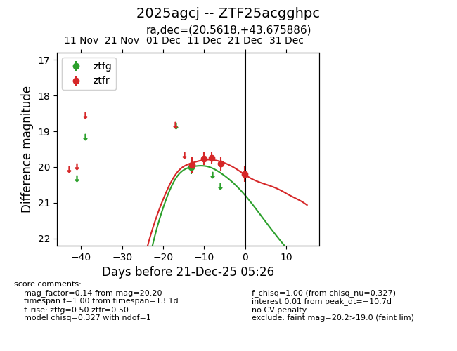
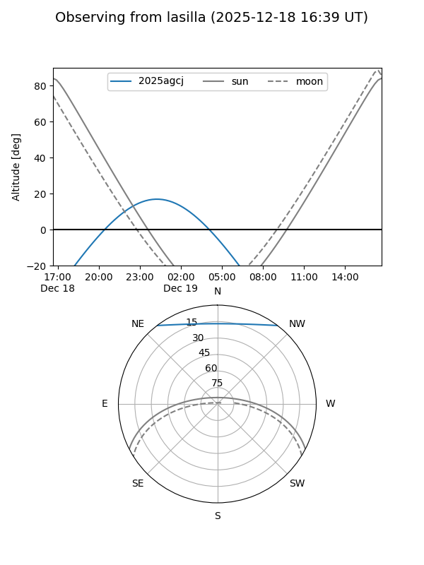
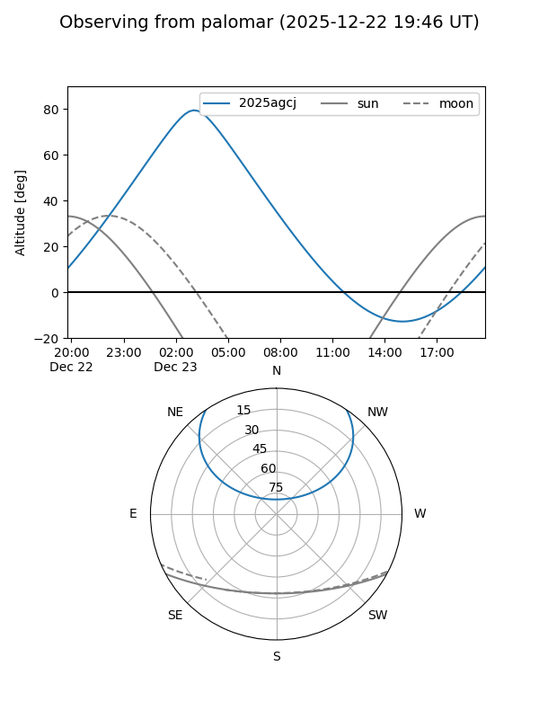
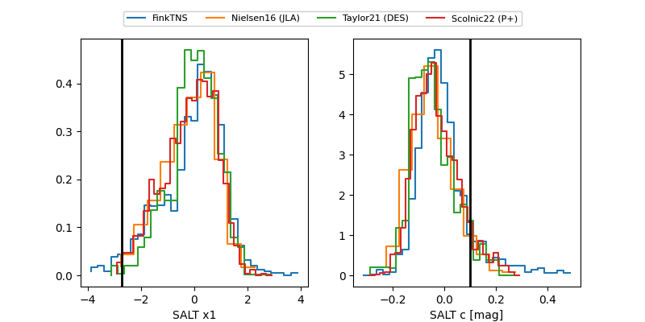

2025agcj
Target 2025agcj at 2025-12-21 05:29
Aliases and brokers:
FINK: fink-portal.org/ZTF25acgghpc
Lasair: lasair-ztf.lsst.ac.uk/objects/ZTF25acgghpc
ALeRCE: alerce.online/object/ZTF25acgghpc
TNS: wis-tns.org/object/2025agcj
YSE: ziggy.ucolick.org/yse/transient_detail/2025agcj
alt names
ZTF25acgghpc (ztf,fink_ztf)
2025agcj (tns,yse)
Coordinates:
equatorial (ra, dec) = 20.5618,+43.67589
equatorial (HMS+DMS) = 01:22:14.83,+43:40:33.19
galactic (l, b) = (128.8108,-18.84390)
Flags:
Photometry:
last ztfg=20.00, ztfr=20.20
1 ztfg, 5 ztfr detections
Lightcurve

Visibility


Additional plots
